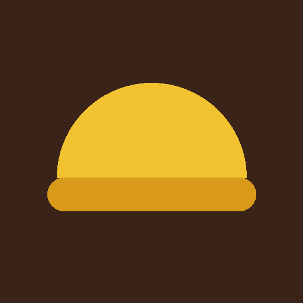

Teman usaha, catatan lebih rapi
Martabak POS
Kasir, QRIS, catat pengeluaran, dan lihat laba usaha martabak dengan lebih praktis. Tambahkan ke layar utama agar mudah dibuka kapan saja.
Buka lewat browser dulu
Ikuti langkah-langkah berikut untuk menambahkan ikon ke layar utama.
Cara instal di iPhone
- Buka link ini menggunakan Safari.
- Tekan tombol Bagikan
(kotak dengan panah ke atas).
- Gulir ke bawah, pilih “Tambahkan ke Layar Utama”. Jika tidak terlihat, ketuk Selengkapnya dulu.
- Tekan “Tambah” di pojok kanan atas. Ikon muncul di layar utama.
Cara instal di Android
- Buka link ini menggunakan Chrome.
- Ketuk menu di pojok kanan atas.
- Pilih “Instal aplikasi” atau “Tambahkan ke layar utama”.
- Ketuk “Instal”. Ikon muncul di layar utama dan laci aplikasi.
Pengguna Samsung Internet: menu ☰ → Tambahkan halaman ke → Layar utama.
Buka di HP Anda
Pindai kode ini dengan kamera HP untuk membuka halaman instal.
Memeriksa mode offline…
🧾
Kasir cepatKetuk menu, hitung otomatis, cetak atau kirim struk.📱
QRIS otomatisNominal langsung tertanam di kode QR.💸
Catat pengeluaranBahan, gas, gaji, sewa, dan lainnya.📊
Laba otomatisRekap harian, mingguan, bulanan dengan grafik.📴
Jalan tanpa internetTetap bisa mencatat saat sinyal hilang.💾
Cadangan dataUnduh dan pulihkan data kapan saja.
Pertanyaan umum
Apakah gratis?
Ya. Tidak ada biaya dan tidak perlu akun atau Play Store / App Store.
Data saya disimpan di mana?
Di perangkat Anda sendiri. Karena itu, unduh cadangan secara berkala dari menu Atur, terutama sebelum ganti HP atau menghapus aplikasi.
Bagaimana cara memperbarui aplikasi?
Otomatis. Saat terhubung internet, versi terbaru diambil sendiri. Tutup dan buka lagi aplikasinya bila perlu.
Bagaimana cara menghapusnya?
Tekan lama ikon di layar utama, lalu pilih hapus. Data ikut terhapus bila tidak dicadangkan.